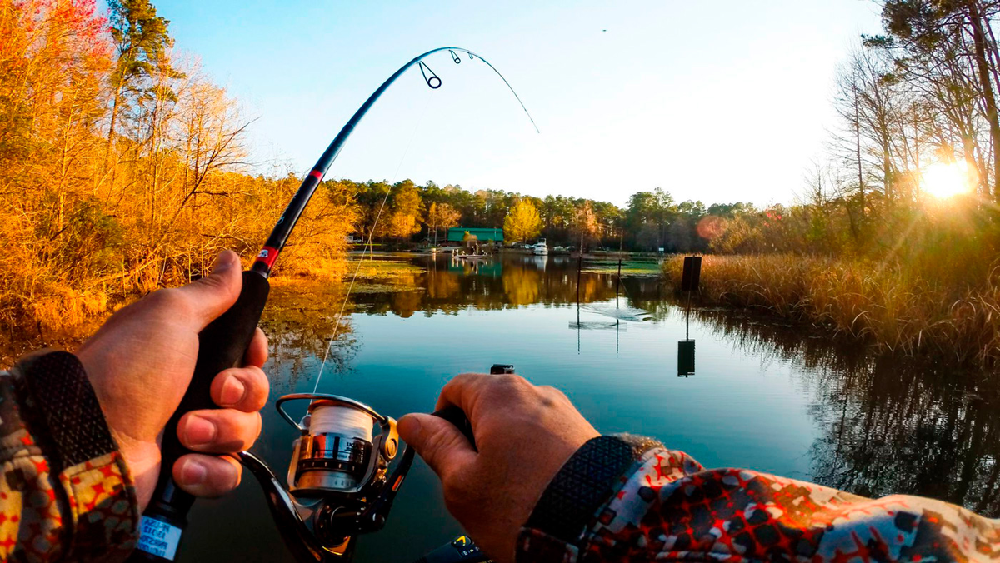
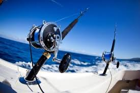
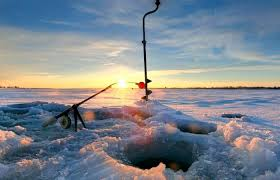
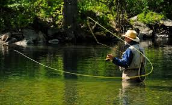
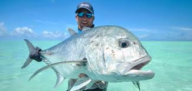

Виды рыбалки
| Виды рыбалки | Снасти | Рыба |
|---|---|---|
| Речная | Удочка, спиннинг | Карась, щука, окунь |
| Морская | Морская удочка, сеть | Селедка, краб, акула |
| Зимняя | Короткая удочка, ледобур | Окунь, плотва, ерш |
| Нахлыст | Нахлыстовое удилище, мушки | Форель, хариус, лосось |
| Глубоководноя | Морское удилище, эхолот | Тунец, марлин, треска |
Речная рыба
Речная рыбалка — это ловля рыбы в реках, озерах и прудах. Для начала достаточно иметь простую удочку и червяка. Летом можно сидеть на берегу и наслаждаться природой. Речная рыбалка — отличное занятие для выходных.
Морская рыбалка
Морская рыбалка — это ловля рыбы в море. Здесь рыба крупнее и сильнее. Можно рыбачить с берега или с лодки. В море можно поймать селедку, крабов и даже акул! Для безопасности всегда нужно брать с собой спасательный жилет.
Зимняя рыбалка
Зимняя рыбалка — это рыбалка на замерзших водоемах. Нужно просверлить лунку во льду и опустить туда короткую удочку. Зимой рыбачат на окуня, плотву и ерша. Важно тепло одеваться и брать с собой горячий чай в термосе.
Нахлыст
Нахлыст — особый вид рыбалки, имитирующий полет насекомых над водой. Используются специальные мушки, имитирующие насекомых. Нахлыст популярен при ловле форели, хариуса и лосося вгорных реках и ручьях. Требует хорошей техники заброса и знания поведения рыбы.
Глубоководная рыбалка
Глубоководная рыбалка происходит далеко от берега на специальных судах. Здесь можно поймать трофейную рыбу — тунца, марлина, треску. Используются мощные удилища и эхолоты для поискарыбы. Это дорогой вид рыбалки, требующий специального оборудования и знаний.